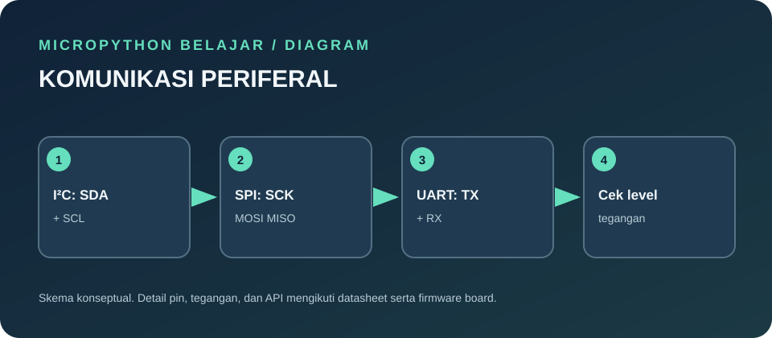

LEVEL MENENGAH · ARTIKEL 13
Komunikasi antarperangkat
Saat satu pin tidak cukup, mikrokontroler berkomunikasi dengan sensor, layar, modul radio, dan perangkat lain melalui protokol serial.

UART
UART adalah komunikasi serial asinkron dengan jalur TX dan RX. Kedua perangkat harus menyepakati baud rate, jumlah bit, parity, dan stop bit. TX satu perangkat dihubungkan ke RX perangkat lain.
from machine import UART
uart = UART(0, baudrate=9600)
uart.write("Halo perangkat\n")
if uart.any():
print(uart.read())I²C
I²C memakai jalur SDA dan SCL bersama. Setiap perangkat umumnya memiliki alamat. Jalur memerlukan pull-up sesuai tegangan bus.
from machine import I2C, Pin
i2c = I2C(0, scl=Pin(22), sda=Pin(21), freq=100000)
print(i2c.scan())SPI
SPI umumnya memiliki SCK, MOSI, MISO, dan chip select. Cocok untuk komunikasi cepat dengan layar, penyimpanan, dan periferal.
from machine import SPI, Pin
spi = SPI(1, baudrate=1_000_000, polarity=0, phase=0,
sck=Pin(18), mosi=Pin(23), miso=Pin(19))
rx = bytearray(4)
spi.write_readinto(b"1234", rx)
print(rx)OneWire
OneWire mengirim data melalui satu jalur sinyal dan umum digunakan beberapa sensor suhu. Implementasi memerlukan modul dan driver khusus.
Memilih protokol
| Protokol | Topologi | Karakteristik |
|---|---|---|
| UART | Point-to-point | Sederhana, TX/RX |
| I²C | Bus bersama | Alamat perangkat, dua jalur |
| SPI | Bus dengan CS | Umumnya cepat, beberapa jalur |
| OneWire | Bus satu jalur | Perangkat dan timing spesifik |
Nomor bus dan pin pada contoh bukan universal. ESP8266, ESP32, RP2040, dan STM32 memiliki pemetaan pin serta API periferal yang berbeda.